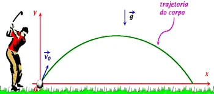
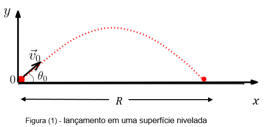
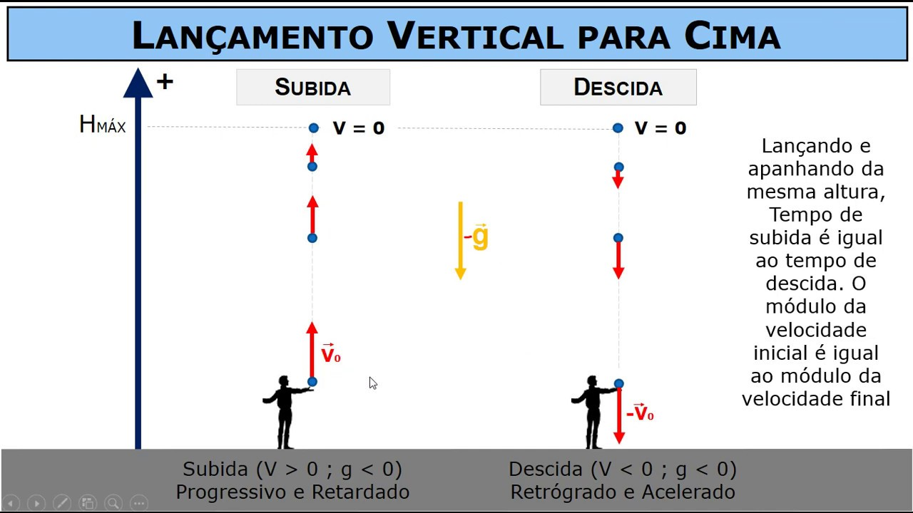
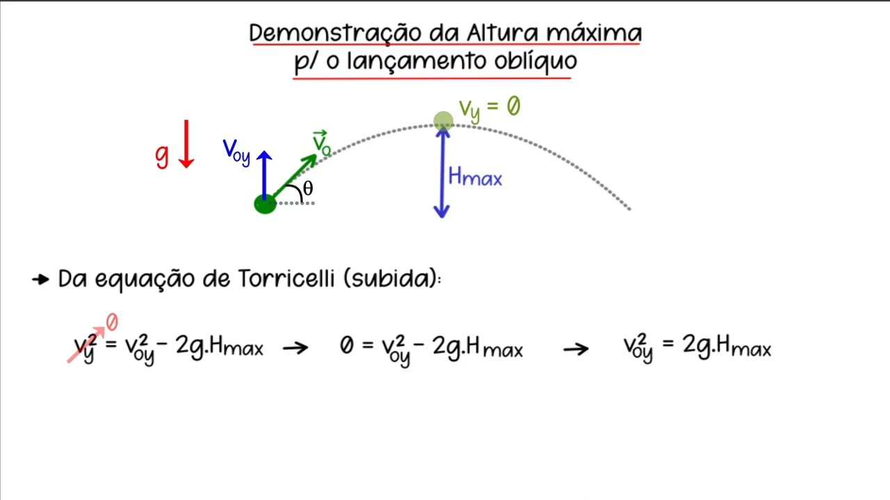

Movimento de Projéteis e Lançamento Oblíquo
O movimento de projéteis é um fenômeno físico fascinante que ocorre quando um objeto é lançado no ar e segue uma trajetória sob a influência da gravidade. Essa trajetória é caracterizada por uma curva parabólica, composta por duas componentes principais: uma horizontal e outra vertical. O lançamento oblíquo é um caso especial desse movimento, em que um objeto é lançado com velocidade inicial em ambas as direções, horizontal e vertical. Para compreender totalmente esses conceitos, é necessário explorar detalhadamente suas características e equações associadas.
Física da Velocidade de Projéteis:
Para compreender a velocidade de projéteis, é crucial conhecer os princípios fundamentais da física que a governam. A Segunda Lei de Newton, por exemplo, estabelece que a aceleração de um objeto é diretamente proporcional à força aplicada a ele e inversamente proporcional à sua massa. Isso significa que, para aumentar a velocidade de um projétil, é necessário aplicar uma força maior ou reduzir sua massa.
Movimento Horizontal
A componente horizontal do movimento de projéteis é relativamente simples. Quando um objeto é lançado, a única força horizontal significativa que atua sobre ele é a força inicial de lançamento. Como resultado, a velocidade horizontal do objeto permanece constante durante todo o movimento. Isso significa que, em um ambiente sem resistência do ar, o objeto continuará se deslocando horizontalmente a uma velocidade constante até atingir o solo.

Movimento Vertical
A componente vertical do movimento é afetada pela aceleração devida à gravidade, que atua para baixo. A velocidade vertical inicial é determinada pela velocidade de lançamento, e à medida que o objeto sobe, sua velocidade vertical diminui até que atinja um ponto máximo, conhecido como altura máxima. Nesse ponto, a velocidade vertical é temporariamente reduzida a zero antes de começar a cair de volta à Terra. A aceleração devida à gravidade faz com que o objeto acelere na direção vertical à medida que cai, resultando em um aumento na velocidade vertical.
Lançamento Oblíquo
O lançamento oblíquo é um cenário intrigante em que um objeto é lançado com velocidade inicial em ambas as direções: horizontal e vertical. Isso resulta em uma trajetória que combina os movimentos horizontal e vertical. O ângulo de lançamento desempenha um papel fundamental na forma da trajetória. Quando o ângulo é de 45 graus, a velocidade é dividida igualmente entre as duas direções, resultando no alcance máximo para um dado valor de velocidade inicial.
Um aspecto importante do lançamento oblíquo é a capacidade de prever a trajetória do objeto e determinar características como alcance, altura máxima e tempo de voo. As equações do movimento de projéteis são ferramentas essenciais para realizar esses cálculos. Algumas das equações comuns incluem:
- Alcance horizontal (R) = (V₀^2 * sen(2θ)) / g
- Altura máxima (H) = (V₀^2 * sen²(θ)) / (2g)
- Tempo de voo (T) = (2 * V₀ * sen(θ)) / g
Aplicações Práticas
O movimento de projéteis e o lançamento oblíquo têm uma ampla gama de aplicações em várias áreas, desde esportes até engenharia e física aplicada. No esporte, arremessos, chutes e lançamentos seguem trajetórias de projéteis. Na engenharia, a análise de trajetórias é fundamental para o design de sistemas de lançamento e a previsão de alcance em cenários militares.
Além disso, o lançamento oblíquo é essencial na compreensão de fenômenos naturais e astronômicos. A trajetória dos planetas em nosso sistema solar, por exemplo, pode ser modelada como um movimento de projétil sob a influência da gravidade do sol.
Princípios Básicos
Existem alguns princípios fundamentais que governam o movimento de projéteis:
- A trajetória é uma parábola.
- A força da gravidade age verticalmente para baixo, afetando a componente vertical da velocidade.
- A componente horizontal da velocidade é constante e não é afetada pela gravidade.
Equações do Movimento de Projéteis
As equações a seguir descrevem o movimento de projéteis:
- Equação da posição horizontal (x): \(x(t) = x_0 + v_0x t\)
- Equação da posição vertical (y): \(y(t) = y_0 + v_0y t - \frac{1}{2}gt^2\)
- Equação da velocidade vertical (y): \(v_y(t) = v_0y - gt\)
- Equação da velocidade horizontal (x): \(v_x(t) = v_0x\)
Aplicações do Movimento de Projéteis
O movimento de projéteis tem inúmeras aplicações em diversos campos, incluindo esportes, engenharia, astronomia e pesquisa científica.
Historia do Movimento de Projéteis
O estudo do movimento de projéteis remonta a séculos atrás. Na antiguidade, cientistas como Arquimedes e Galileu Galilei fizeram importantes contribuições para nossa compreensão desse fenômeno.
Arquimedes, um matemático grego do século III a.C., é conhecido por suas contribuições ao estudo da balística. Ele desenvolveu princípios que governam o movimento de projéteis e inventou dispositivos como a catapulta para fins militares.
No século XVII, Galileu Galilei, o famoso cientista italiano, fez experimentos e observações detalhadas sobre o movimento de projéteis. Suas observações sobre a queda dos corpos e o lançamento de projéteis foram fundamentais para o desenvolvimento da física clássica.
Conclusão
O movimento de projéteis e o lançamento oblíquo são conceitos fundamentais que desempenham um papel crucial em muitos aspectos de nossa vida diária. A capacidade de prever e entender o movimento de objetos em trajetórias parabólicas é uma ferramenta valiosa em várias disciplinas. Esses conceitos continuam a ser uma área de estudo fascinante e relevante, explorada em campos que vão desde a física até a engenharia e a exploração espacial.
A velocidade de projéteis é um conceito fundamental em física que desempenha um papel crucial em várias áreas da ciência, engenharia e tecnologia. Ela está relacionada à rapidez com que objetos são lançados, arremessados ou disparados através do espaço. A medição da velocidade de projéteis é normalmente expressa em unidades de comprimento por unidade de tempo, como metros por segundo (m/s) ou quilômetros por hora (km/h). Neste texto, exploraremos profundamente o conceito de velocidade de projéteis, sua importância em diferentes contextos e, em particular, discutiremos o lançamento oblíquo.